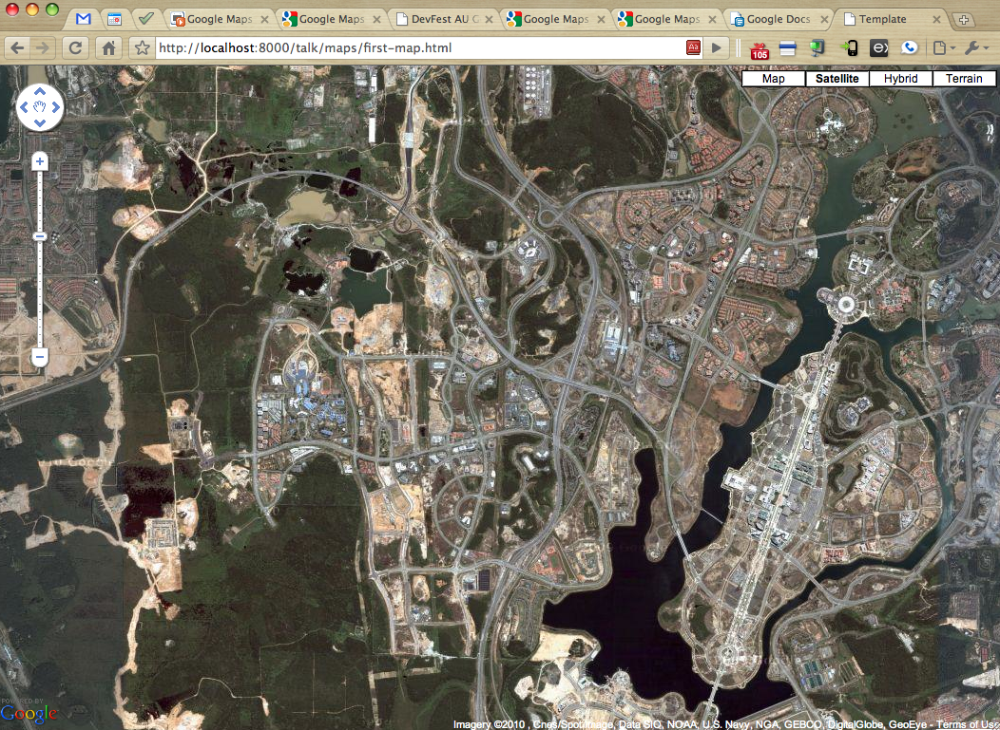
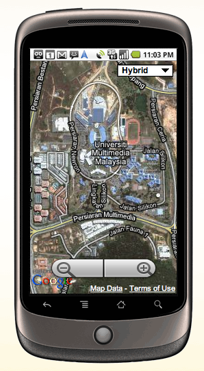
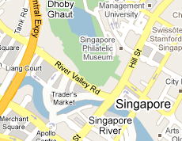
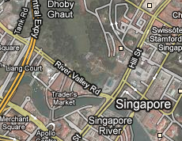
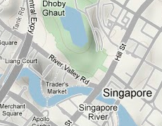
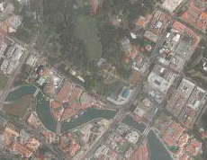

What are Google Maps APIs
A collection of libraries and services that are hosted by Google
which enable you to embed Google Maps on your website


| Zoom level |
Number of tiles |
Size of map |
| 0 |
1 x 1 |
256 x 256 |
| 1 |
2 x 2 |
512 x 512 |
| 2 |
4 x 4 |
1024 x 1024 |
| 10 |
1024 x 1024 |
262144 x 262144 |
Step 4: Create different map types

RoadMap

Hybrid

Terrain

Satellite
Step 5: Build an awesome set of APIs
 Static Maps
Static Maps
 Web Services
Web Services
Navigation Control
Map type control
Markers
Polylines
Info Window
What have others done with it?
Thanks!
For more information, check out the documentation
http://code.google.com/apis/maps

 Javascript
Javascript
 Flash
Flash
 Earth
Earth